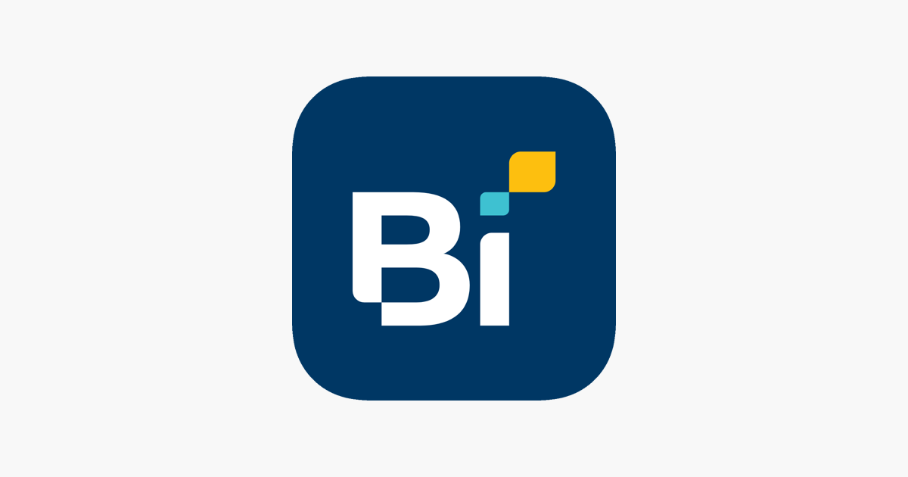
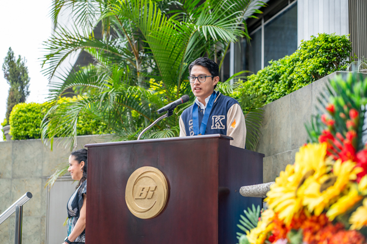
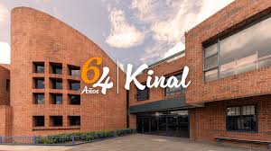

TU CAMINO AL ÉXITO ESTÁ EN KINAL
Kinal es un Centro Educativo privado, no lucrativo, dirigido a la formación técnica profesional de jóvenes y adultos, de beneficio colectivo y asistencia social en favor de los sectores más necesitados de la comunidad. Nuestro valor fundamental es enseñar a realizar el trabajo bien hecho, que sea la base de la superación de alumnos y el medio para servir a los demás.

Kinal ofrece su programa de Educación General Básica para todos aquellos jóvenes que buscan una orientación técnica y excelencia académica.

Durante 3 años se prepara al joven de forma técnica y académica, el egresado estará listo para trabajar en el ramo técnico de la especialidad que eligió estudiar; el título obtenido le permitirá ingresar a la universidad.

Contamos con más de 30 especialidades técnicas y tecnológicas que pueden favorecer tu crecimiento y/o tu inserción laboral.

Podemos diseñar conjuntamente el programa de formación profesional que mejor se adapte a tus necesidades de capacitación.

Dirigido al fortalecimiento de mandos medios y especialmente aquellos que han cursado una carrera técnica y desean continuar con estudios a nivel universitario. Estos estudios son avalados por la Universidad del Istmo.
Galería Multimedia



Jóvenes beneficiados (a 2024)
25k
Escuela Técnica
1500
Ciclo Básico
6k
Diversificado
+32k
Total
NUESTROS PARTNERS


Explicación del rediseño
Este rediseño mantiene un formato fiel al original; sin embargo, uno de los cambios más significativos fue la implementación de una galería multimedia de fotos y videos. Esta mejora se realizó pensando en los estudiantes que desean conocer las instalaciones y el ambiente del colegio. Al centralizar este contenido en un solo espacio dinámico, se evita que el usuario deba navegar a otras pestañas o realizar búsquedas externas, eliminando así procesos que podrían resultar tediosos.
Asimismo, aunque se conservaron los colores institucionales, se optó por dar predominancia al color blanco. Se sustituyeron los apartados con animaciones excesivas que saturaban la vista por un diseño más limpio y minimalista, logrando transmitir la misma información de una manera mucho más clara y profesional.